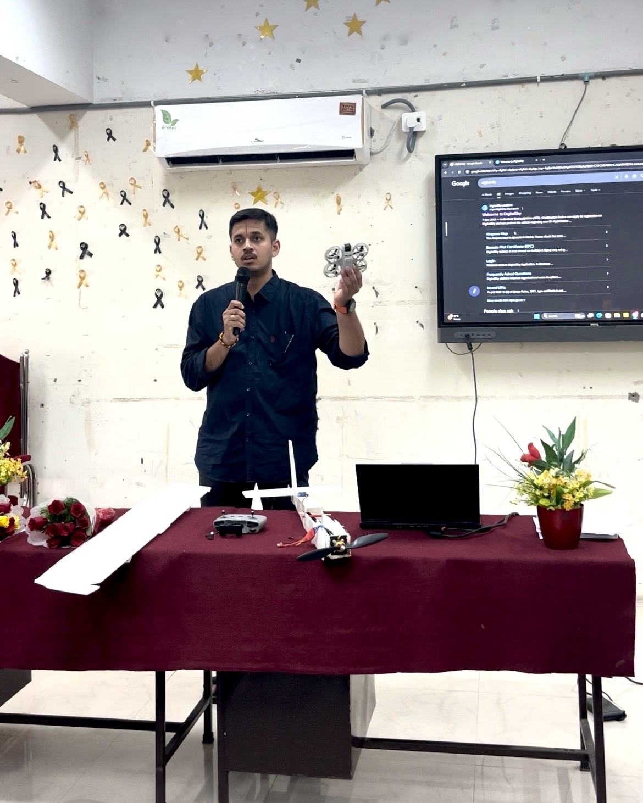
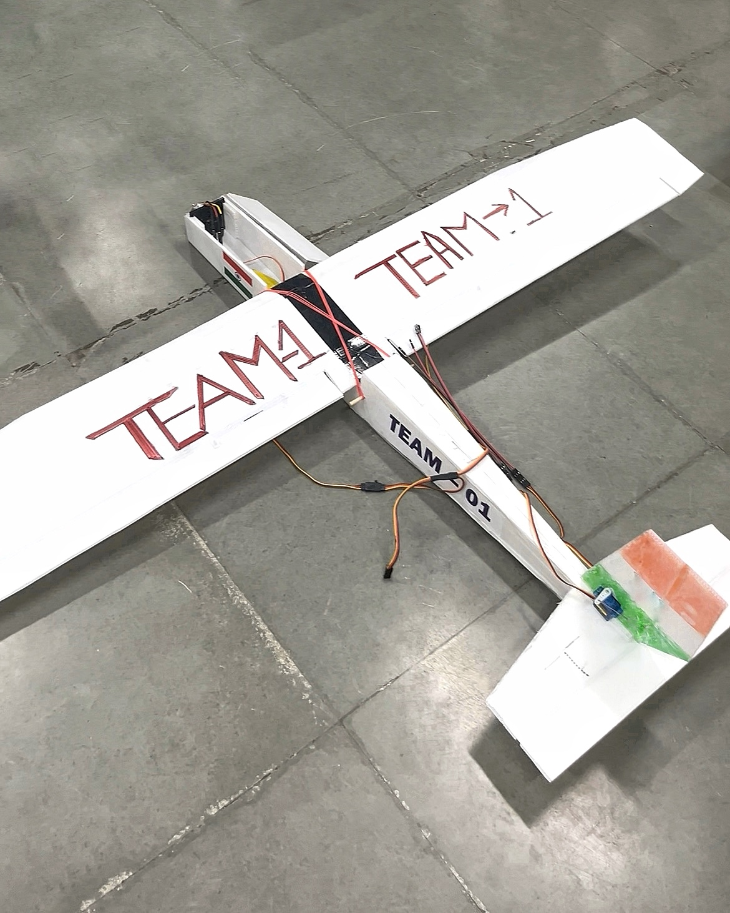
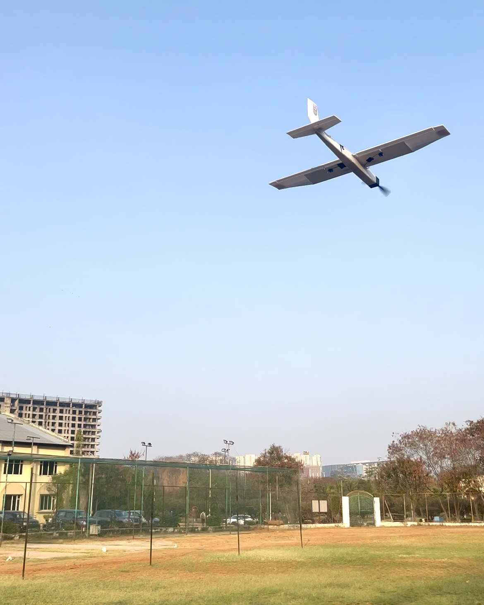
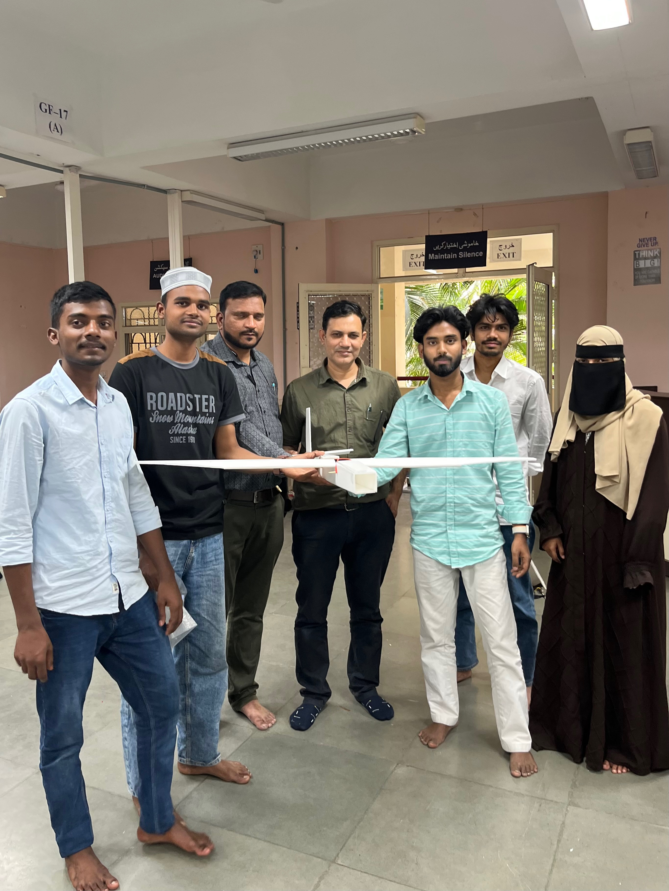
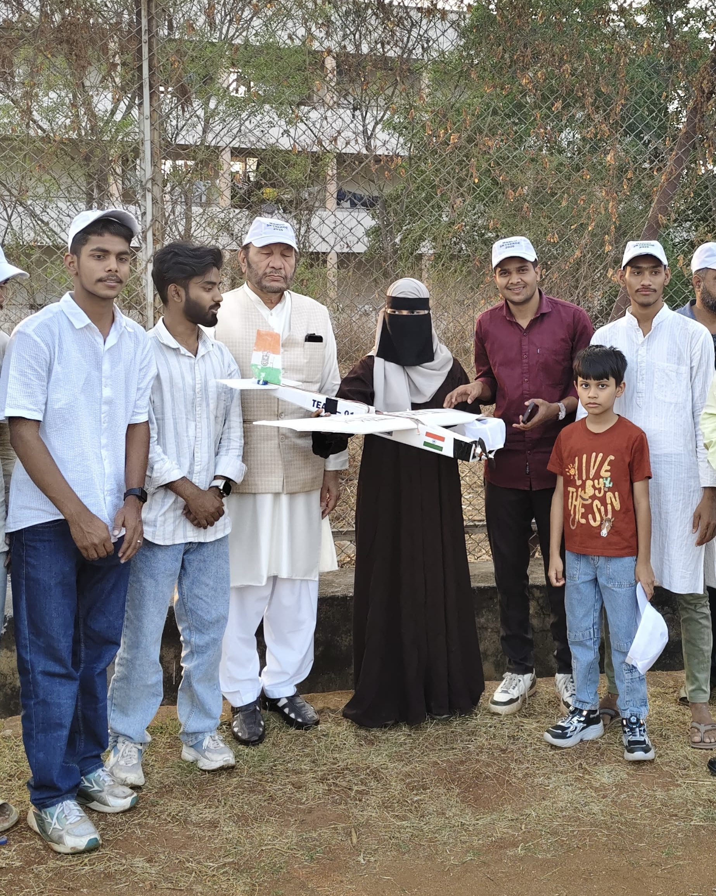
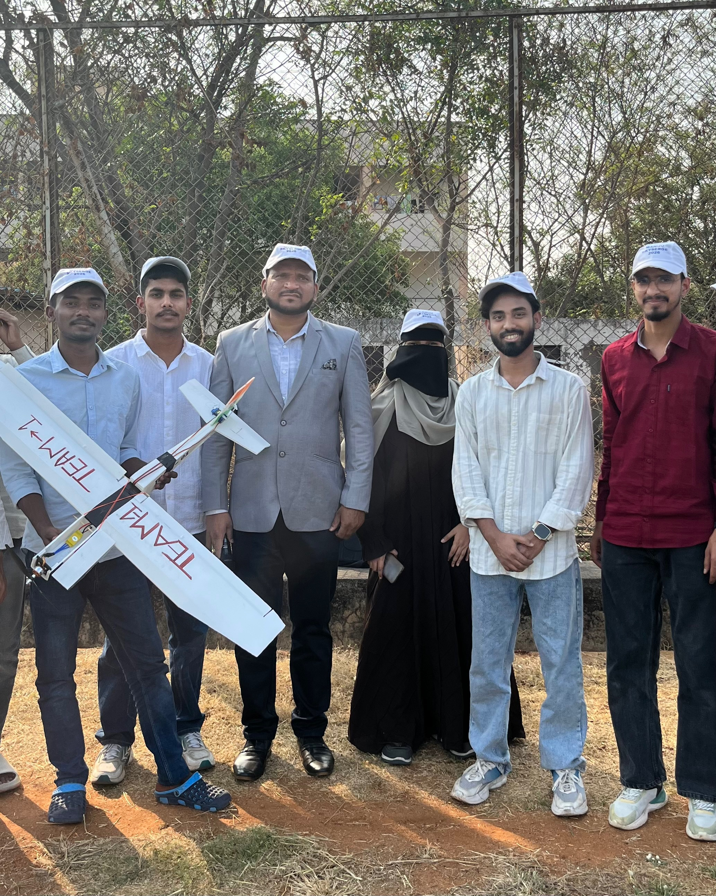
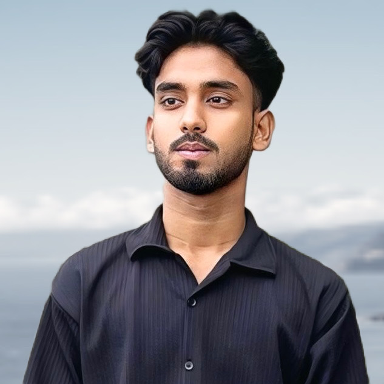
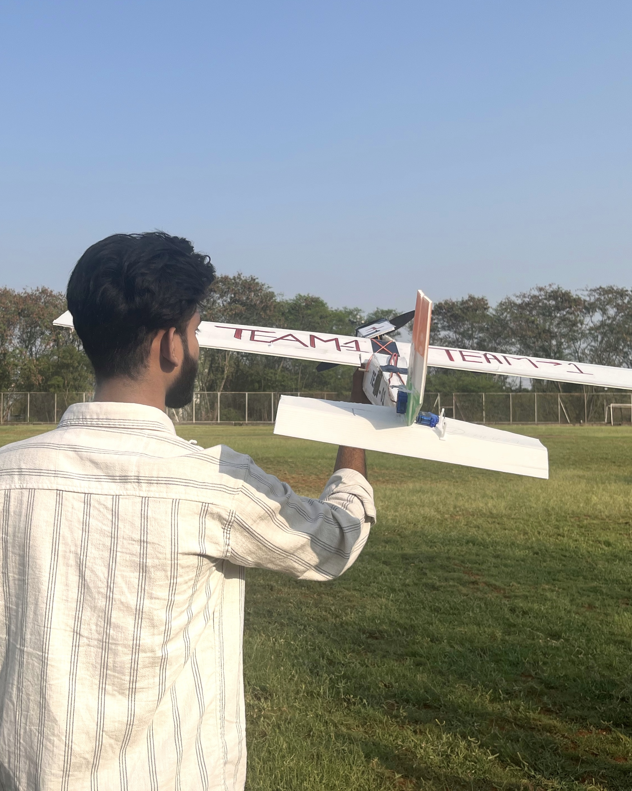
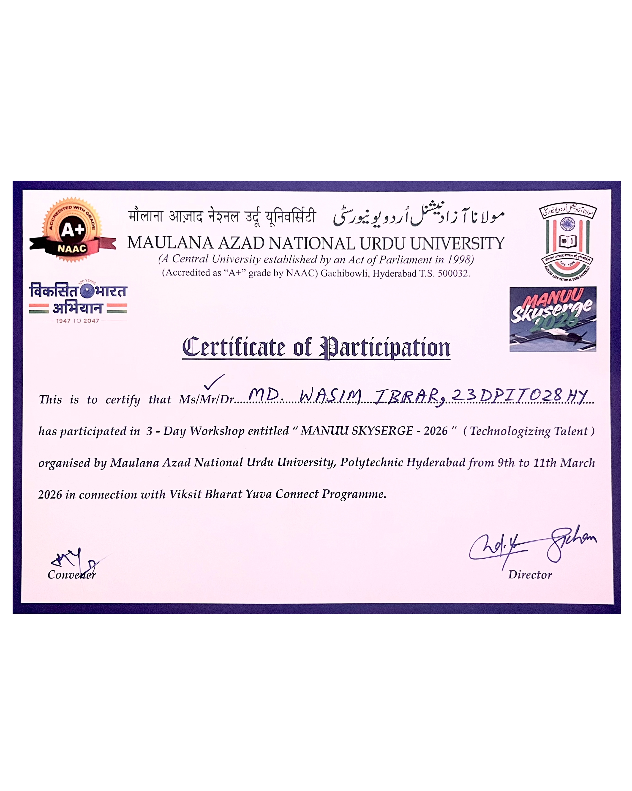
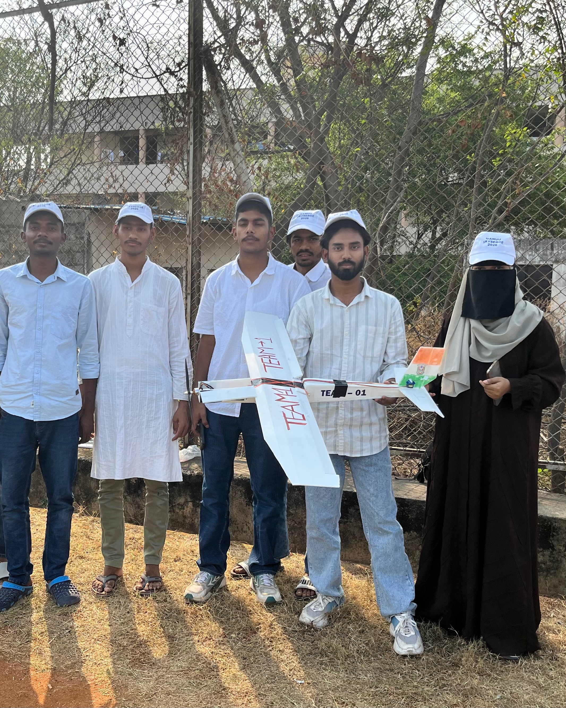

MANUU Skyserge 2026: Fixed-Wing Drone Flight
Team: Team 1 | Category: Fixed-Wing Drone | Organizer: Polytechnic Dept
MANUU Skyserge 2026 was a 3-day drone workshop and competition organized by the Polytechnic Department for students across all departments. Our team, Team 1, successfully designed, built, and flew a fixed-wing drone, showcasing technical excellence in aerodynamics and UAV control.
Project & Event Highlights

🛠️ Intensive Workshop
A rigorous 3-day program covering everything from basic electronics and RC systems to advanced flight testing and aerodynamics.

✈️ Fixed-Wing Specialty
Out of 15 competing teams, Team 1 specialized in the complex design and structural assembly of a fixed-wing drone, focusing on stable lift and flight endurance.

🚀 Successful Takeoff
On the final day of Skyserge, our drone successfully took flight and navigated the MANUU airspace, validating our design and hard work.

👨🏫 Expert Guidance
The project was executed under the invaluable mentorship of Yousuf Sir (Convenor), whose guidance was key to our technical success.

📜 VC Recognition
A moment of great pride as our team received the workshop certificates directly from the Honorable Vice-Chancellor (VC) of MANUU.

🤝 Unified Team Effort
As Team 1, we collaborated effectively across various departments, proving that interdisciplinary teamwork is the core of engineering innovation.
Team Lead

Wasim IbrarLead (Team 1) & Drone Enthusiast
Event Gallery



Technical Overview
This drone was built using high-strength foam and carbon fiber reinforcements to ensure a high Power-to-Weight ratio. The control surface movements were calibrated using digital servos to provide precise banking and pitching during flight.
The workshop highlighted the importance of Center of Gravity (CG) balancing in fixed-wing models. Our team successfully achieved stable flight on the first attempt by optimizing the electronic placement and battery positioning within the fuselage.